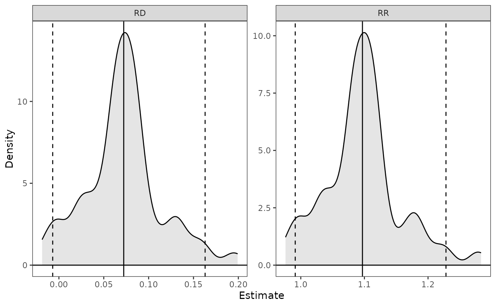

Inference for simbased_est objects
Source: R/plot.simbased_est.R, R/summary.simbased_est.R
summary.simbased_est.Rdsummary() tabulates the estimates and confidence intervals and (optionally) p-values from a simbased_est object. confint() computes confidence intervals.
Arguments
- parm
a vector of the names or indices of the estimates to plot. If unspecified, all estimates will be displayed.
- ci
logical; whether to display confidence interval limits for the estimates. Default isTRUE.- level
the confidence level desired. Default is .95 for 95% confidence intervals.
- method
the method used to compute p-values and confidence intervals. Can be
"wald"to use a Normal approximation or"quantile"to use the simulated sampling distribution (default). See Details. Abbreviations allowed.- ...
for
plot(), further arguments passed toggplot2::geom_density().- object, x
a
simbased_estobject; the output of a call tosim_apply()or its wrappers.- null
the values of the parameters under the null hypothesis for the p-value calculations. Should have length equal to the number of quantities estimated, or one, in which case it will be recycled. Set values to
NAto omit p-values for those quantities. When all values areNA, the default, no p-values are produced.
Value
For summary(), a summary.simbased_est object, which is a matrix containing the coefficient estimates, standard errors, test statistics, p-values, and confidence intervals. Not all columns will be present depending on the arguments supplied to summary().
For confint(), a matrix containing the confidence intervals for the requested quantities.
For plot(), a ggplot object.
Details
summary() uses the estimates computed from the original model as its estimates and uses the simulated parameters for inference only.
When method = "wald", the standard deviation of the simulation estimates is used as the standard error, which is used in the z-statistics and the confidence intervals. The p-values and confidence intervals are valid only when the sampling distribution of the resulting statistic is normal (which can be assessed using plot()). When method = "quantile", the confidence interval is calculated using the quantiles of the simulation estimates corresponding to level, and the p-value is calculated as twice the proportion of simulation estimates less than or greater than null, whichever is smaller; this is equivalent to inverting the confidence interval but is only truly valid when the true sampling distribution is only a location shift from the sampling distribution under the null hypothesis and should therefore be interpreted with caution. Using "method = "quantile" (the default) is recommended because the confidence intervals will be valid even if the sampling distribution is not Normally distributed. The precision of the p-values and confidence intervals depends on the number of simulations requested (the value of n supplied to sim()).
The plots are produced using ggplot2::geom_density() and can be customized with ggplot2 functions.
Examples
data("lalonde", package = "MatchIt")
fit <- glm(I(re78 > 0) ~ treat + age + race + nodegree + re74,
data = lalonde)
s <- sim(fit, n = 100)
# Compute average marginal means for `treat`
est <- sim_ame(s, var = "treat")
#>
| | 0 % ~calculating
|+ | 1 % ~00s
|+ | 2 % ~00s
|++ | 3 % ~00s
|++ | 4 % ~00s
|+++ | 5 % ~00s
|+++ | 6 % ~00s
|++++ | 7 % ~00s
|++++ | 8 % ~00s
|+++++ | 9 % ~00s
|+++++ | 10% ~00s
|++++++ | 11% ~00s
|++++++ | 12% ~00s
|+++++++ | 13% ~00s
|+++++++ | 14% ~00s
|++++++++ | 15% ~00s
|++++++++ | 16% ~00s
|+++++++++ | 17% ~00s
|+++++++++ | 18% ~00s
|++++++++++ | 19% ~00s
|++++++++++ | 20% ~00s
|+++++++++++ | 21% ~00s
|+++++++++++ | 22% ~00s
|++++++++++++ | 23% ~00s
|++++++++++++ | 24% ~00s
|+++++++++++++ | 25% ~00s
|+++++++++++++ | 26% ~00s
|++++++++++++++ | 27% ~00s
|++++++++++++++ | 28% ~00s
|+++++++++++++++ | 29% ~00s
|+++++++++++++++ | 30% ~00s
|++++++++++++++++ | 31% ~00s
|++++++++++++++++ | 32% ~00s
|+++++++++++++++++ | 33% ~00s
|+++++++++++++++++ | 34% ~00s
|++++++++++++++++++ | 35% ~00s
|++++++++++++++++++ | 36% ~00s
|+++++++++++++++++++ | 37% ~00s
|+++++++++++++++++++ | 38% ~00s
|++++++++++++++++++++ | 39% ~00s
|++++++++++++++++++++ | 40% ~00s
|+++++++++++++++++++++ | 41% ~00s
|+++++++++++++++++++++ | 42% ~00s
|++++++++++++++++++++++ | 43% ~00s
|++++++++++++++++++++++ | 44% ~00s
|+++++++++++++++++++++++ | 45% ~00s
|+++++++++++++++++++++++ | 46% ~00s
|++++++++++++++++++++++++ | 47% ~00s
|++++++++++++++++++++++++ | 48% ~00s
|+++++++++++++++++++++++++ | 49% ~00s
|+++++++++++++++++++++++++ | 50% ~00s
|++++++++++++++++++++++++++ | 51% ~00s
|++++++++++++++++++++++++++ | 52% ~00s
|+++++++++++++++++++++++++++ | 53% ~00s
|+++++++++++++++++++++++++++ | 54% ~00s
|++++++++++++++++++++++++++++ | 55% ~00s
|++++++++++++++++++++++++++++ | 56% ~00s
|+++++++++++++++++++++++++++++ | 57% ~00s
|+++++++++++++++++++++++++++++ | 58% ~00s
|++++++++++++++++++++++++++++++ | 59% ~00s
|++++++++++++++++++++++++++++++ | 60% ~00s
|+++++++++++++++++++++++++++++++ | 61% ~00s
|+++++++++++++++++++++++++++++++ | 62% ~00s
|++++++++++++++++++++++++++++++++ | 63% ~00s
|++++++++++++++++++++++++++++++++ | 64% ~00s
|+++++++++++++++++++++++++++++++++ | 65% ~00s
|+++++++++++++++++++++++++++++++++ | 66% ~00s
|++++++++++++++++++++++++++++++++++ | 67% ~00s
|++++++++++++++++++++++++++++++++++ | 68% ~00s
|+++++++++++++++++++++++++++++++++++ | 69% ~00s
|+++++++++++++++++++++++++++++++++++ | 70% ~00s
|++++++++++++++++++++++++++++++++++++ | 71% ~00s
|++++++++++++++++++++++++++++++++++++ | 72% ~00s
|+++++++++++++++++++++++++++++++++++++ | 73% ~00s
|+++++++++++++++++++++++++++++++++++++ | 74% ~00s
|++++++++++++++++++++++++++++++++++++++ | 75% ~00s
|++++++++++++++++++++++++++++++++++++++ | 76% ~00s
|+++++++++++++++++++++++++++++++++++++++ | 77% ~00s
|+++++++++++++++++++++++++++++++++++++++ | 78% ~00s
|++++++++++++++++++++++++++++++++++++++++ | 79% ~00s
|++++++++++++++++++++++++++++++++++++++++ | 80% ~00s
|+++++++++++++++++++++++++++++++++++++++++ | 81% ~00s
|+++++++++++++++++++++++++++++++++++++++++ | 82% ~00s
|++++++++++++++++++++++++++++++++++++++++++ | 83% ~00s
|++++++++++++++++++++++++++++++++++++++++++ | 84% ~00s
|+++++++++++++++++++++++++++++++++++++++++++ | 85% ~00s
|+++++++++++++++++++++++++++++++++++++++++++ | 86% ~00s
|++++++++++++++++++++++++++++++++++++++++++++ | 87% ~00s
|++++++++++++++++++++++++++++++++++++++++++++ | 88% ~00s
|+++++++++++++++++++++++++++++++++++++++++++++ | 89% ~00s
|+++++++++++++++++++++++++++++++++++++++++++++ | 90% ~00s
|++++++++++++++++++++++++++++++++++++++++++++++ | 91% ~00s
|++++++++++++++++++++++++++++++++++++++++++++++ | 92% ~00s
|+++++++++++++++++++++++++++++++++++++++++++++++ | 93% ~00s
|+++++++++++++++++++++++++++++++++++++++++++++++ | 94% ~00s
|++++++++++++++++++++++++++++++++++++++++++++++++ | 95% ~00s
|++++++++++++++++++++++++++++++++++++++++++++++++ | 96% ~00s
|+++++++++++++++++++++++++++++++++++++++++++++++++ | 97% ~00s
|+++++++++++++++++++++++++++++++++++++++++++++++++ | 98% ~00s
|++++++++++++++++++++++++++++++++++++++++++++++++++| 99% ~00s
|++++++++++++++++++++++++++++++++++++++++++++++++++| 100% elapsed=00s
coef(est)
#> E[Y(0)] E[Y(1)]
#> 0.7453346 0.8175754
# Compute average marginal effects on risk difference
# (RD) and risk ratio (RR) scale
est <- transform(est,
RD = `E[Y(1)]` - `E[Y(0)]`,
RR = `E[Y(1)]` / `E[Y(0)]`)
# Compute confidence intervals and p-values,
# using given null values for computing p-values
summary(est, null = c(NA, NA, 0, 1))
#> Estimate 2.5 % 97.5 % P-value
#> E[Y(0)] 0.7453 0.7051 0.7881 .
#> E[Y(1)] 0.8176 0.7608 0.8900 .
#> RD 0.0722 -0.0069 0.1630 0.14
#> RR 1.0969 0.9913 1.2282 0.14
# Same tests using normal approximation
summary(est, null = c(NA, NA, 0, 1),
normal = TRUE)
#> Estimate 2.5 % 97.5 % P-value
#> E[Y(0)] 0.7453 0.7051 0.7881 .
#> E[Y(1)] 0.8176 0.7608 0.8900 .
#> RD 0.0722 -0.0069 0.1630 0.14
#> RR 1.0969 0.9913 1.2282 0.14
# Plot the RD and RR
plot(est, parm = c("RD", "RR"))
